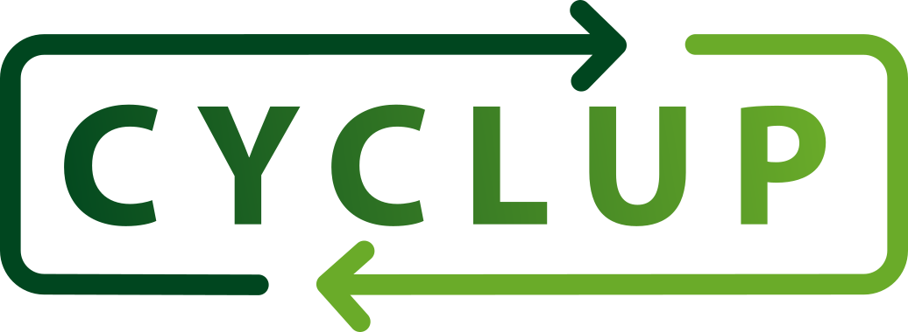
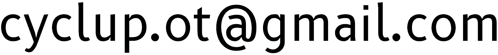

Association CYCLUP
Objectifs

-
Premièrement,
l’association CYCLUP a pour but principal de modéliser, réaliser et tester des démonstrateurs à l’échelle 1 dans le domaine de l’autonomie énergétique, et s’attache plus particulièrement au réemploi et à la production à petite échelle de carburants alternatifs :-
récupération et transformation de plastiques usagés en carburants de synthèse (diesel et essence)
-
récupération et purification d'huile végétale usagée pour emploi comme carburant alternatif au diesel après adaptation des véhicules
-
-
Deuxièmement,
l’association CYCLUP cherchera à développer "l’écosystème" humain et logistique permettant la récupération des matières premières nécessaires à la production de carburants alternatifs listés plus haut. Le principe étant de fournir un service supplémentaire aux circuits pré-existants, afin d’augmenter le taux de récupération des plastiques notamment, tout en restant basé sur un fonctionnement avec des moyens limités, pour une meilleure reproduction éventuelle dans des zones/pays à revenus faibles :-
récupération et tri/conditionnement des déchets plastiques, à terre comme en bordure de mer ou à l’embouchure des rivières
-
récupération et filtration des huiles usagées
-
-
Troisièmement,
l’association CYCLUP tentera de recycler des matériaux, objets et véhicules afin de leur donner une seconde vie, en les valorisant si-possible :-
Récupération et stockage de matériaux, objets et véhicules
-
Recyclage, upcyclage ou transformation de matériaux, objets et véhicules (voitures, vélos …)
-
-
Quatrièmement,
l’association CYCLUP se propose de dispenser toute formation relative à ses domaines de compétence, à destination de ses membres, lors d’ateliers, stages ou formation sur site.
CYCLUP mettra à disposition de tous, membres et non-membres, l’ensemble des connaissances acquises sur un site Internet, dans l’esprit "open source" de partage des savoirs.-
conception de projet : rétroconception, modélisation 3D et 2D
-
réalisation de projet : assistance aux travaux de mécanique, travail du fer, du bois, constructions, etc.
-
| L’ensemble des projets est détaillé à l’onglet projets |
Étapes de développement
Au travers du partage d’expériences entre ses adhérents, l’association CYCLUP fait émerger des solutions concrètes et robustes. Elle est apolitique, athée et tournée vers l’opérationnel.
-
Dans un premier temps, il s’agit de réaliser un prototype et de l’optimiser suite au REX, en se basant sur des principes de réalisation et d’exploitation à faible coût, comme d’efficience ou de portabilité (standardisation de pièces, etc.)
-
Ensuite, une fois le modèle éprouvé et revu, la transmission de compétences au plus grand nombre reste le but ultime, par l’organisation de stages de réalisation, comme de formations d’aide à la conception ou l’assistance à l’auto-réalisation.
Contact
Vous pouvez nous contacter par mail à l’adresse suivante : 
Documents fondateurs
Statuts
Les statuts sont téléchargeables au format PDF en cliquant sur le lien suivant Statuts CYCLUP (PDF)
Autres documents
Au fur et à mesure du développement des activités, celles-ci feront l’objet de règlements spécifique.
Par exemple, le dépôt principal fera l’objet d’un règlement d’usage spécifiant aussi bien la nature des objets stockés que les personnes qui y auront accès.
De même, lors de la création de l’Atelier, l’uitilisation de celui-ci par les membres fera l’objet d’un règlement spécifique.
L’ensemble de ces règlements visera à assurer la sécurité de tous.
Licences des textes de ce site WEB
| "Copy it right !" L’ensemble du contenu de ce site est couvert par les 2 licences ci-dessous : |
-
CC-BY-NC-SA (texte complet - EN)
résumé ci-dessous :-
Vous êtes autorisé à :
-
Partager — copier, distribuer et communiquer le matériel par tous moyens et sous tous formats
-
Adapter — remixer, transformer et créer à partir du matériel
-
-
Selon les conditions suivantes :
-
Attribution — Vous devez créditer l’oeuvre, intégrer un lien vers la licence et indiquer si des modifications ont été effectuées à l’oeuvre. Vous devez indiquer ces informations par tous les moyens raisonnables, sans toutefois suggérer que l’Offrant vous soutient ou soutient la façon dont vous avez utilisé son oeuvre.
-
Pas d’utilisation commerciale — Vous n’êtes pas autorisé à faire un usage commercial de cette oeuvre, tout ou partie du matériel la composant.
-
Partage dans les mêmes conditions — Dans le cas où vous effectuez un remix, que vous transformez, ou créez à partir du matériel composant l’oeuvre originale, vous devez diffuser l’oeuvre modifiée dans les même conditions, c’est-à-dire avec la même licence avec laquelle l’oeuvre originale a été diffusée.
-
Pas de restrictions complémentaires — Vous n’êtes pas autorisé à appliquer des conditions légales ou des mesures techniques qui restreindraient légalement autrui à utiliser l’oeuvre dans les conditions décrites par la licence.
-
-